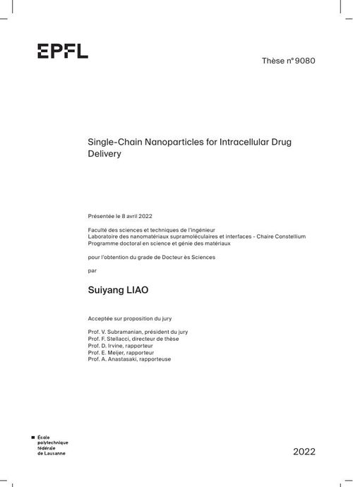

Single-Chain Nanoparticles for Intracellular Drug Delivery
Abstract
Single-chain nanoparticles (SCNPs) are polymeric nanoparticles formed by collapsing individual polymer chains via intra-molecular interactions, holding promise for sub-20 nm particles with defined structure. This thesis investigates SCNP folding and their interaction with cells from a topological point of view: showing that SCNP topology can be tuned, developing analytical tools to characterize it, and demonstrating that cellular uptake discriminates between SCNP topological isomers.